6. Object Detection
R-CNN family, YOLO, SSD, anchor boxes, FPN, RetinaNet, focal loss, NMS, IoU, mAP
1. Problem Definition
Object detection is one of the core problems in computer vision. Given an input image, the aim is to detect and localize all objects of interest within that image, outputting a list of detections where each detection consists of:
- A class label (e.g., "dog", "car")
- A bounding box defined by coordinates $(x, y, w, h)$ or $(x_1, y_1, x_2, y_2)$
- A confidence score $P$ indicating certainty
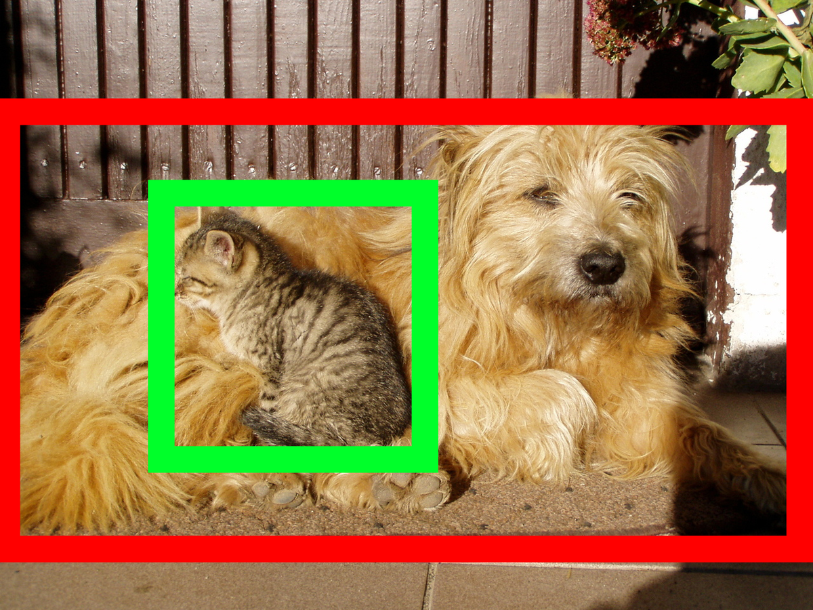
Two Families of Deep Learning Detectors
| Family | Examples | Characteristics |
|---|---|---|
| Two-stage | R-CNN, Fast R-CNN, Faster R-CNN | First generate region proposals, then classify each. Higher accuracy, slower. |
| Single-stage | SSD, YOLO | Predict boxes and class scores in a single pass. Faster, sometimes slightly less accurate. |
2. Applications of Object Detection
Object detectors can be used alone or combined with other techniques:
- Self-driving cars: detecting pedestrians, vehicles, traffic signs, obstacles
- Object tracking: detecting objects in each frame, linking detections over time
- Face detection: for recognition pipelines, camera autofocus
- Medical imaging: detecting tumors, lesions, anomalies
- Activity recognition: detect person first, then classify action
- Manufacturing: quality inspection, defect detection on production lines
- OCR: detecting text regions before reading
- Counting: crowd analysis, retail analytics
3. Challenges in Object Detection
| Challenge | Description |
|---|---|
| Viewpoint variations | The same object looks different when viewed from different angles |
| Object deformation | Non-rigid objects change shape (person sitting vs. standing) |
| Occlusions | Objects may be partially hidden; detector must still recognize them |
| Varying illumination | Changes in lighting alter object appearance |
| Background clutter | Complex backgrounds can confuse the detector |
| Scale variations | Objects appear at vastly different sizes (person far vs. near) |
| Intra-class variation | Objects within the same class look very different (dog breeds) |
| Inter-class similarity | Different classes can look similar (wolf vs. husky) |
4. Object Localization and Bounding Box Regression
Bounding Box Formats
- Corner coordinates: $(x_1, y_1, x_2, y_2)$ — top-left and bottom-right corners
- Center + size: $(x_c, y_c, w, h)$ — center point plus width and height
Adding a Regression Head
To predict bounding box coordinates, a CNN classifier is extended with 4 regression outputs in addition to the class scores:
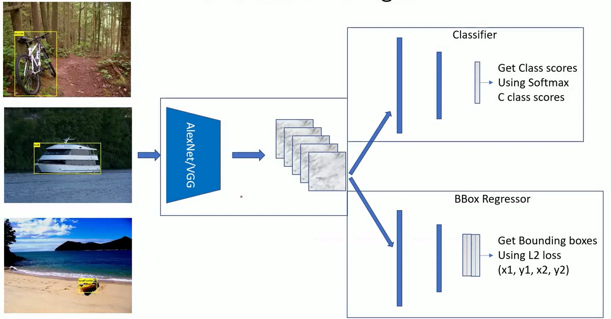
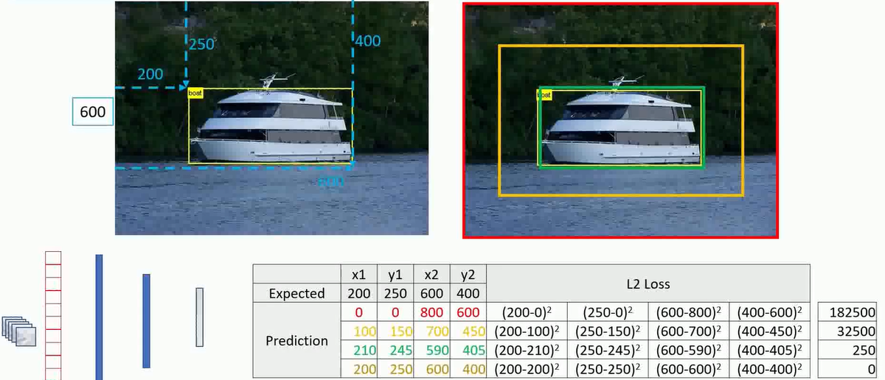
5. Two-Stage Object Detectors
Two-stage detectors split detection into two phases: (1) Region Proposal — generate candidate regions that might contain objects, then (2) Classification and Refinement — for each proposed region, classify the object and refine the bounding box.
5.1 R-CNN (2014)
R-CNN (Girshick et al.) was the first successful deep learning object detector.
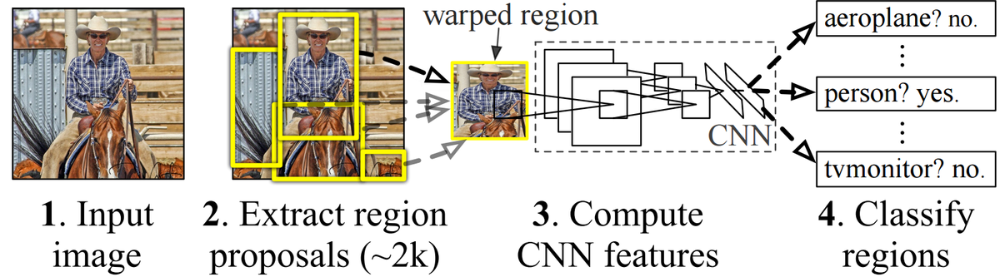
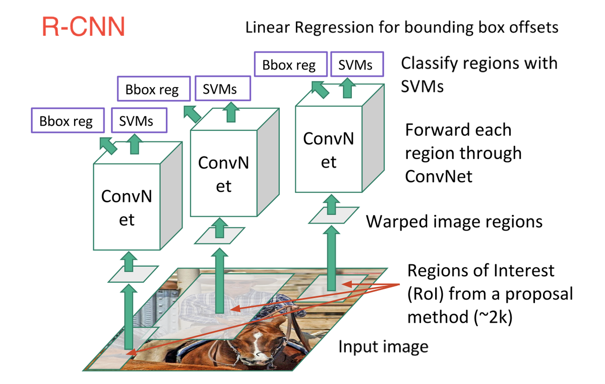
Selective Search
Selective Search generates ~2000 region proposals per image:
- Over-segment the image based on pixel intensities (watershed).
- Iteratively group adjacent segments by similarity (color, texture, size, shape).
- At each iteration, add bounding boxes of merged segments to the proposal list.
- This creates proposals from small to large in a bottom-up hierarchical approach.
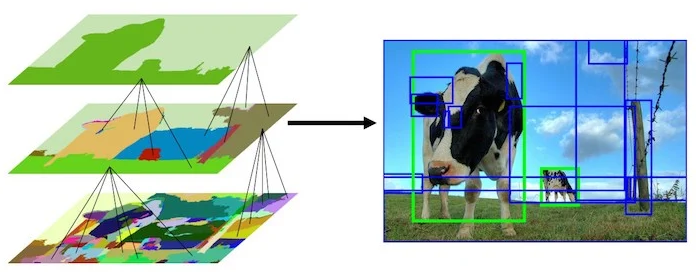
Training has three separate stages: (1) Fine-tune the CNN backbone (AlexNet/VGG) using proposals with IoU ≥ 0.5 as positives. (2) Train a linear SVM per class on the CNN features. (3) Train bounding box regressors. This multi-stage training is cumbersome. Speed: ~0.05 fps (20 seconds per image).
5.2 Fast R-CNN (2015)
Fast R-CNN (Girshick) addresses the R-CNN speed bottleneck with one key insight: pass the whole image through the CNN once, then extract features per proposal from the shared feature map.
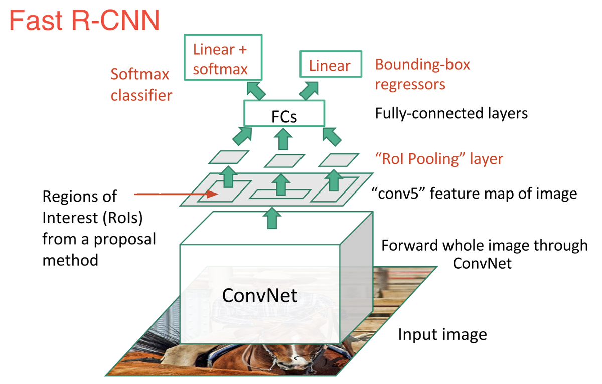
| Aspect | R-CNN | Fast R-CNN |
|---|---|---|
| CNN runs per image | ~2000 | 1 |
| Training | 3-stage | End-to-end (single stage) |
| Classifier | Linear SVM | Softmax (joint) |
| Speed | ~0.05 fps | ~0.5 fps (10x faster) |
Remaining bottleneck: Selective Search still runs on CPU and takes ~2 seconds per image, dominating total runtime.
5.3 Faster R-CNN (2015)
Faster R-CNN (Ren et al.) eliminates the Selective Search bottleneck by introducing a learned Region Proposal Network (RPN) that shares the backbone feature maps with the detection head.
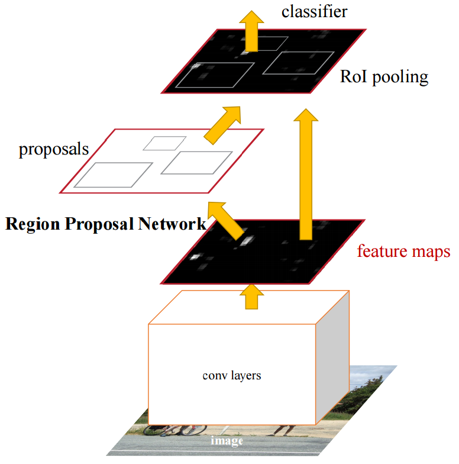
Region Proposal Network (RPN)
- A fully convolutional network sliding a $3 \times 3$ window over the feature map.
- At each position, it predicts $k$ anchors of different shapes/sizes (typically $k=9$: 3 scales × 3 aspect ratios).
- For each anchor: 2 objectness scores (object vs. background) and 4 bounding box offsets.
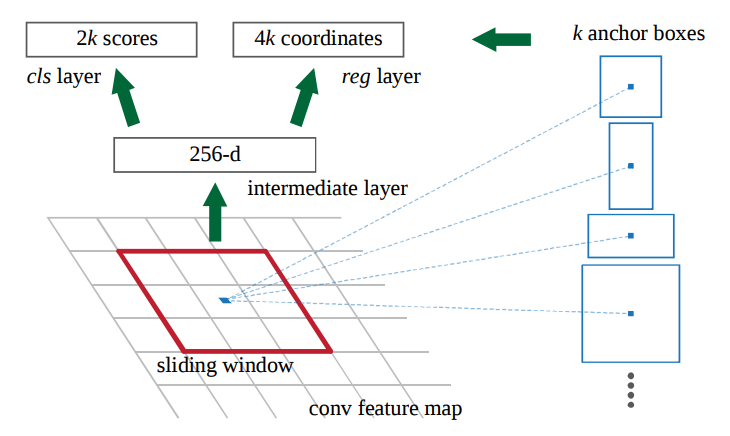
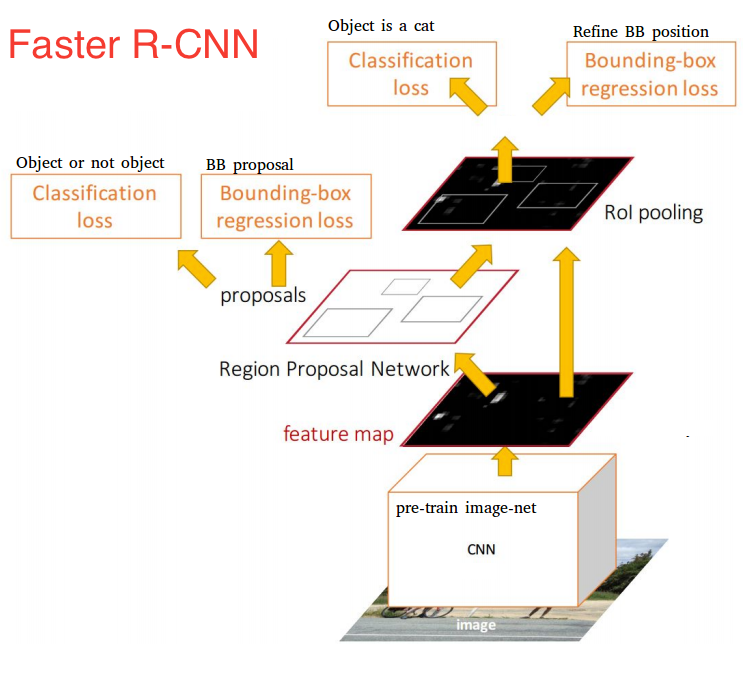
Speed: ~7 fps (140 ms/image) — near real-time and ~140x faster than the original R-CNN.
5.4 Mask R-CNN (2017)
Mask R-CNN (He et al.) extends Faster R-CNN to simultaneously perform instance segmentation in addition to object detection.
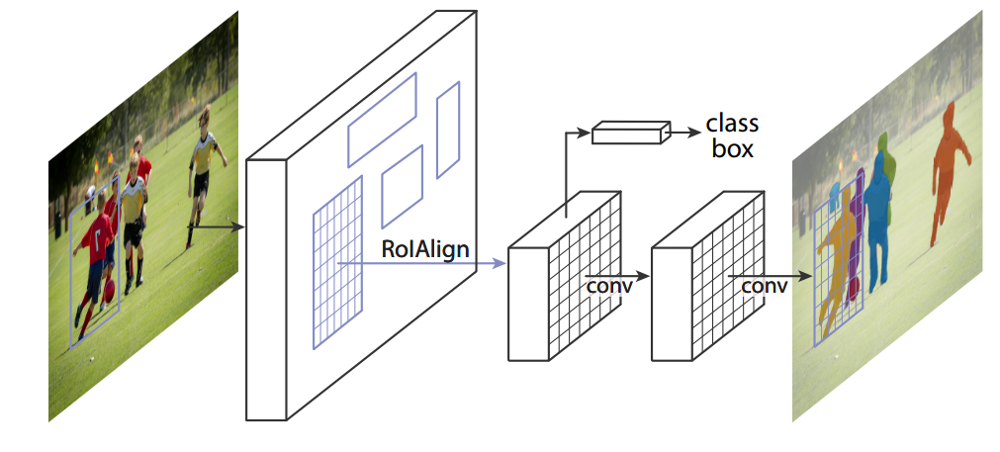
RoI Align uses bilinear interpolation to compute exact values at fractional positions, preserving precise spatial alignment. Improves detection mAP by ~3 points even without segmentation.
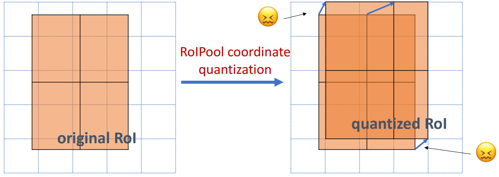
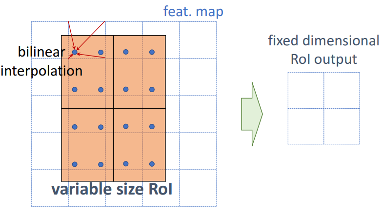
Mask R-CNN outputs three predictions per RoI: class label, refined bounding box, and a binary segmentation mask ($14 \times 14 \times C$ for $C$ classes).
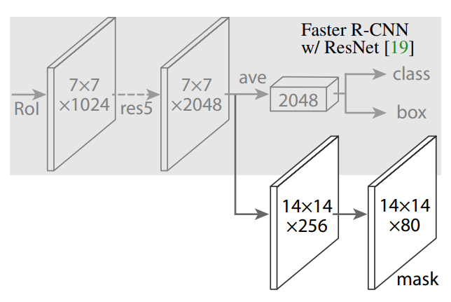
5.5 R-FCN (2016)
R-FCN addresses the per-RoI FC layer computation bottleneck of Faster R-CNN using position-sensitive RoI Pooling.
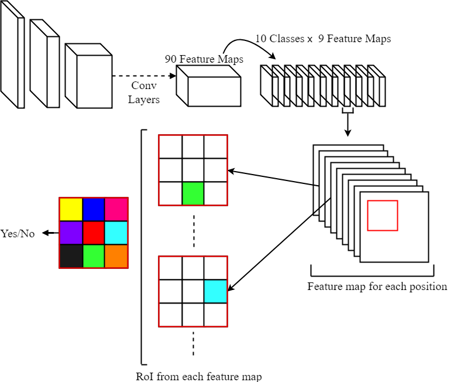
Advantage: all heavy computation is shared in conv layers. Per-RoI computation is just lightweight pooling and voting — making R-FCN faster than Faster R-CNN for large numbers of proposals.
6. Single-Stage Object Detectors
Single-stage detectors skip the separate region proposal step entirely. They predict bounding boxes and class scores directly from feature maps in a single forward pass, enabling real-time detection.
6.1 SSD (Single Shot MultiBox Detector, 2016)
SSD (Liu et al.) uses multi-scale feature maps and predefined anchor boxes to detect objects at different sizes in a single forward pass.
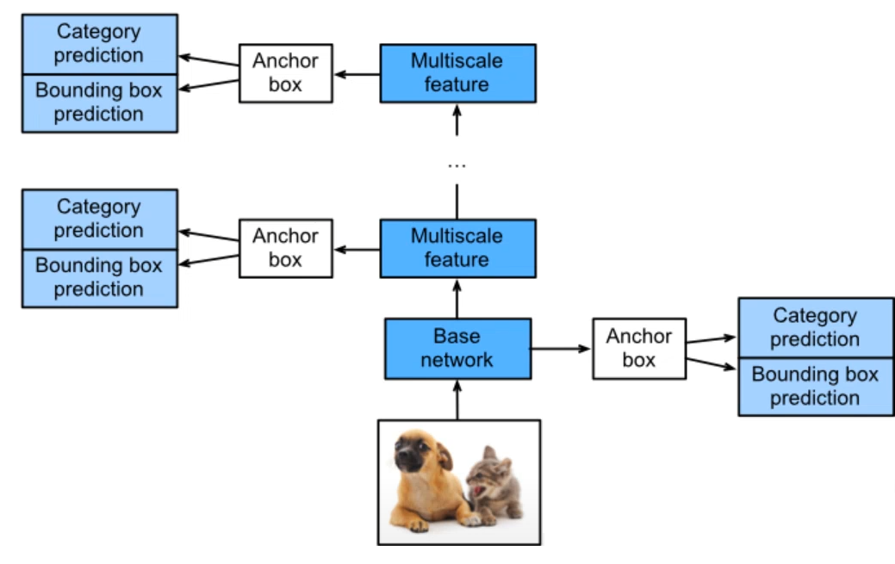
Architecture:
- Base network: VGG-16 (up to conv5_3), FC layers replaced by extra conv layers.
- 6 prediction layers at different spatial resolutions (multi-scale).
- At each scale, for every spatial position, two $3 \times 3$ conv layers predict class scores and box offsets for each anchor.
- All predictions across scales go through NMS to produce final detections.
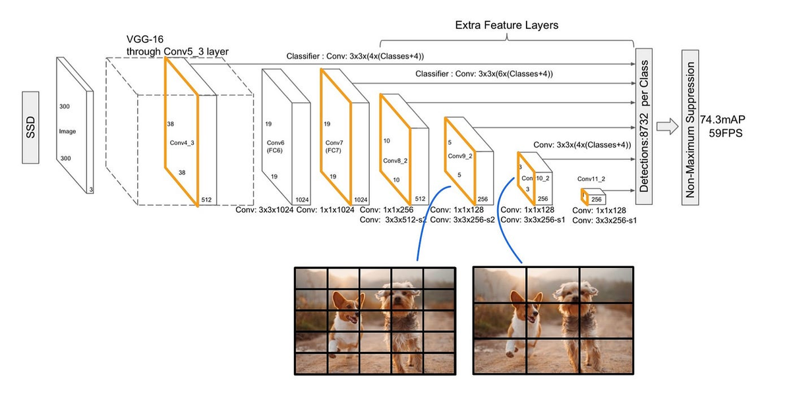
Performance: 74.3 mAP on VOC2007 at 59 FPS (17 ms/image).
6.2 YOLO (You Only Look Once, 2016)
YOLO (Redmon et al.) frames object detection as a single regression problem: directly predict bounding boxes and class probabilities from the full image in one evaluation.
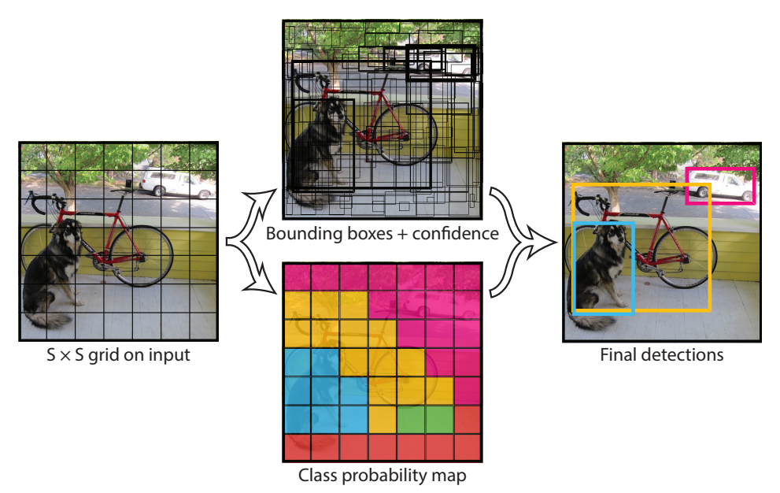
Per cell: $B \times 4$ box coordinates + $B$ confidence scores + $C$ class probabilities = $2 \times 4 + 2 + 20 = \mathbf{30}$ values.
Total output: $7 \times 7 \times 30 = \mathbf{1470}$ values.
Confidence = $P(\text{Object}) \times \text{IoU}(\text{pred}, \text{GT})$.
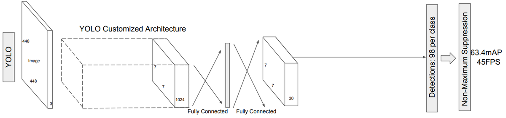
| Aspect | SSD | YOLO v1 |
|---|---|---|
| Feature maps used | 6 scales | Single final map |
| Output head | Conv layers at each scale | FC layers on single map |
| Multi-scale handling | Excellent (natural) | Limited (coarse 7×7 grid) |
| mAP (VOC2007) | 74.3 | 63.4–69.0 |
| Speed | 59 fps | 45 fps |
7. Anchor Boxes
Anchor boxes (also called "priors" or "default boxes") are a fundamental concept used in both two-stage (Faster R-CNN) and single-stage (SSD, RetinaNet) detectors.
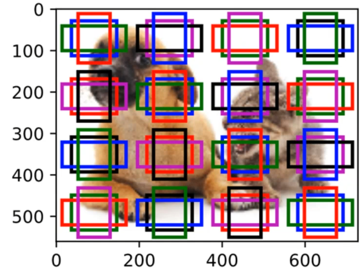
Offset parameterization:
- $x_{\text{pred}} = x_{\text{anchor}} + \Delta x$
- $y_{\text{pred}} = y_{\text{anchor}} + \Delta y$
- $w_{\text{pred}} = w_{\text{anchor}} \cdot e^{\Delta w}$
- $h_{\text{pred}} = h_{\text{anchor}} \cdot e^{\Delta h}$
Typical configurations:
- Faster R-CNN RPN: 3 scales × 3 aspect ratios = 9 anchors per position.
- SSD: 4 or 6 anchors per position across 6 feature map scales.
8. Feature Pyramid Network (FPN)
CNNs naturally produce feature maps at multiple scales. Deeper layers have smaller spatial resolution but richer semantics; earlier layers have higher spatial resolution but weaker semantics. FPN combines the best of both.
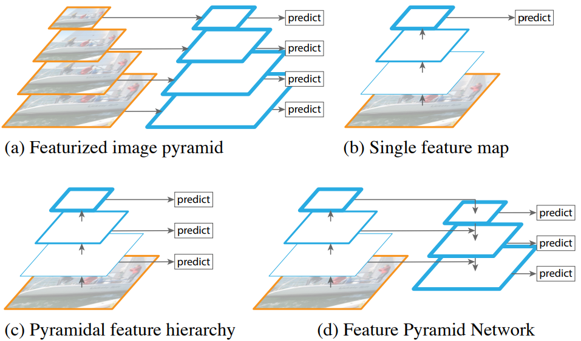
FPN Architecture
- Bottom-up pathway: Standard CNN forward pass. Feature maps at each stage: $C_2, C_3, C_4, C_5$ (high to low resolution).
- Top-down pathway: Starting from deepest $C_5$: 2× upsample → element-wise add with lateral $1 \times 1$ conv of corresponding $C_k$ → produces $P_2, P_3, P_4, P_5$.
- Predictions are made independently at each pyramid level $P_k$.
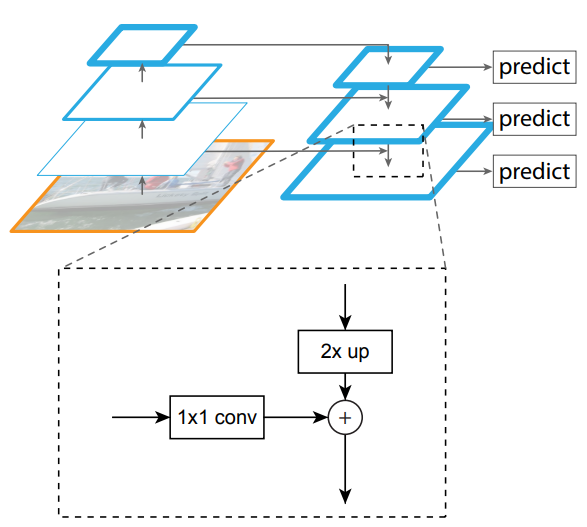
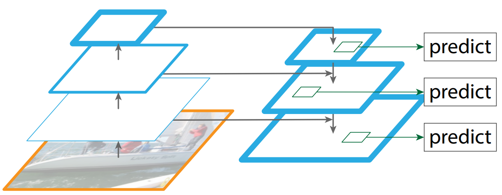
9. RetinaNet and Focal Loss
RetinaNet (Lin et al., 2017) is a single-stage detector that matches or exceeds two-stage detector accuracy through two innovations: an FPN-based architecture and focal loss.
The Class Imbalance Problem
Single-stage detectors evaluate 10,000–100,000 candidate locations per image. The vast majority are background (easy negatives), creating severe class imbalance that causes easy examples to dominate training gradients, preventing the network from learning to detect hard examples.
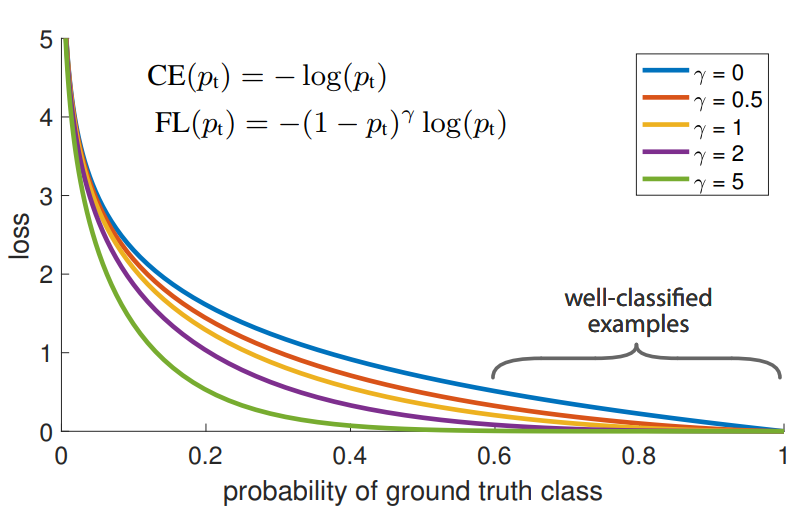
RetinaNet Architecture
FPN backbone + two shared subnets applied at every pyramid level:
- Classification subnet: 4× $3 \times 3$ conv with ReLU → final $3 \times 3$ conv with depth $K \times A$ (classes × anchors). Parameters shared across pyramid levels.
- Box regression subnet: 4× $3 \times 3$ conv with ReLU → final $3 \times 3$ conv with depth $4A$. Class-agnostic. Parameters shared across pyramid levels.
10. Non-Maximum Suppression (NMS)
NMS is a post-processing algorithm used by virtually all object detectors to remove redundant overlapping detections of the same object.
- Sort all detections by confidence score (highest first).
- Select the highest-confidence detection; add to the output list.
- Compute IoU of this detection with all remaining detections.
- Delete all detections whose IoU with the selected detection exceeds a threshold (e.g., 0.5).
- Repeat from step 2 with the remaining detections.
Key parameters:
- IoU threshold: Typical values 0.45–0.5. Lower = more aggressive suppression.
- Confidence threshold: Detections below minimum confidence are discarded before NMS.
11. Performance Evaluation
11.1 Intersection over Union (IoU)
Example: Predicted box area = 100, GT box area = 150, intersection = 80. Union = 100 + 150 − 80 = 170. IoU = 80/170 ≈ 0.47. Since 0.47 < 0.5, this would be a False Positive at IoU threshold 0.5.
IoU is used in three contexts:
- Training: Assign ground truth labels to anchors/proposals (anchors with IoU ≥ 0.5 are positives).
- NMS: Decide which overlapping detections to suppress.
- Evaluation: Decide whether a predicted box matches a GT box for computing precision/recall.
11.2 Mean Average Precision (mAP)
mAP is the most widely used metric for evaluating object detectors, based on the Area Under the Precision-Recall Curve.
- Sort all detections by confidence (highest first).
- For each detection: check if it matches any remaining GT box with IoU > threshold. If yes: True Positive (TP), mark that GT used. If no: False Positive (FP).
- After each detection: Precision = TP/(TP+FP), Recall = TP/total GT.
- Average Precision (AP) = area under the Precision-Recall curve.
Worked Example
5 detections for class "cat" (sorted by confidence: 0.98, 0.96, 0.90, 0.30, 0.10), 4 ground truths:
| Detection (conf.) | Match? | Cumul. TP | Cumul. FP | Precision | Recall |
|---|---|---|---|---|---|
| 0.98 | Yes | 1 | 0 | 1/1 = 1.00 | 1/4 = 0.25 |
| 0.96 | No | 1 | 1 | 1/2 = 0.50 | 1/4 = 0.25 |
| 0.90 | Yes | 2 | 1 | 2/3 = 0.67 | 2/4 = 0.50 |
| 0.30 | Yes | 3 | 1 | 3/4 = 0.75 | 3/4 = 0.75 |
| 0.10 | Yes | 4 | 1 | 4/5 = 0.80 | 4/4 = 1.00 |
AP for "cat" = area under the curve formed by these (Recall, Precision) points.
| Metric | IoU Threshold | Used In | Difficulty |
|---|---|---|---|
| mAP@0.5 | 0.5 | PASCAL VOC | Standard |
| mAP@0.75 | 0.75 | COCO | Stricter |
| mAP@[0.5:0.95] | 0.5 to 0.95 step 0.05 | MS COCO | Most challenging |
12. Detector Comparison
| Method | Type | VOC2007 mAP | Speed (FPS) | Speed (ms/img) |
|---|---|---|---|---|
| DPM v5 | Traditional | 33.7 | 0.07 | 14,000 |
| R-CNN | Two-stage | 66.0 | 0.05 | 20,000 |
| Fast R-CNN | Two-stage | 70.0 | 0.5 | 2,000 |
| Faster R-CNN | Two-stage | 73.2 | 7 | 140 |
| YOLO | Single-stage | 63.4–69.0 | 45 | 22 |
| SSD | Single-stage | 74.3 | 59 | 17 |
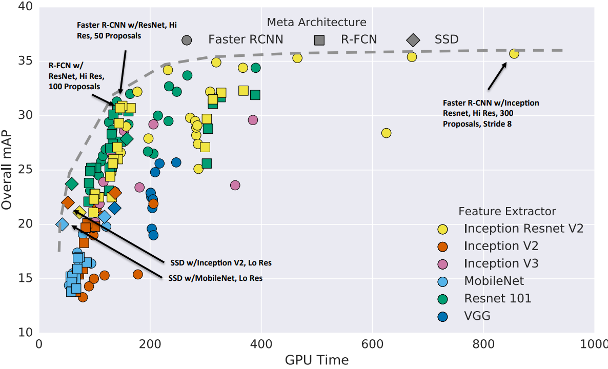
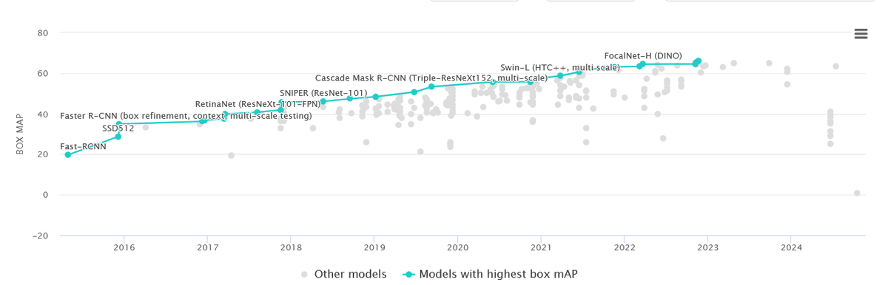
Two-Stage vs. Single-Stage Trade-offs
| Aspect | Two-Stage | Single-Stage |
|---|---|---|
| Speed | Slower (140+ ms) | Faster (17–22 ms, real-time) |
| Accuracy | Generally higher | Historically lower, now competitive |
| Pipeline complexity | Multi-component | Simpler, single pass |
| Class imbalance | Handled by RPN filtering | Major issue (addressed by focal loss) |
| Use case | When accuracy is paramount | When speed is critical (real-time) |
Before deep learning detectors, a common approach was to slide a fixed-size window across the image and classify each patch. Problems: (1) fixed window size forces use of image pyramids for scale variation; (2) localization ambiguity requires NMS; (3) enormous number of windows makes it computationally prohibitive. These problems motivated Selective Search (for R-CNN) and eventually end-to-end learned detectors.
Watershed produces the initial over-segmentation used by Selective Search in R-CNN/Fast R-CNN: (1) compute gradient image; (2) find local minima as region seeds; (3) simulate "flooding" from each minimum; (4) pixels at watershed boundaries (touching two+ regions) become boundaries. Camera noise produces many local minima, causing over-segmentation — which is desired, as Selective Search then merges these small segments bottom-up.